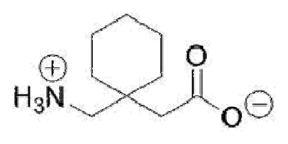
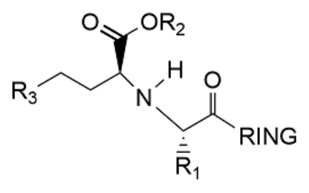
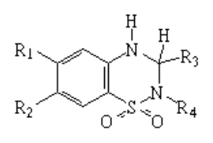
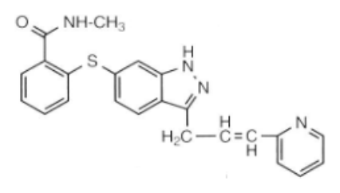

開卷有益 ／
藥師 ／ 藥理學與藥物化學 ／ 111 年第 1 次111 年第 1 次藥師藥理學與藥物化學試題與答案
這一頁是民國 111 年第 1 次藥師藥理學與藥物化學的整份歷屆試題，共 80 題，題目與標準答案出自考選部「國家考試試題及測驗式試題答案」開放資料，其中 73 題附有詳解。以下逐題列出題幹、選項與答案；要計時作答或記錄成績，請用線上練習。
考選部原始場次代碼：111020
線上作答這一科 →
全部 80 題
第 1 題
有關藥物清除率（clearance）的敘述，下列何者錯誤？
（A） 藥物以靜脈注射時，清除率較其他給藥路徑高（B） 可以由藥物的吸收量除以AUC（area under the curve），得知清除率（C） 清除率會依病情的嚴重度而改變（D） 清除率會受藥物合用的影響答案：（A）
詳解與考點 正解：清除率（clearance）反映身體清除藥物的能力，給藥途徑會改變生體可用率與濃度曲線，卻不會使靜脈注射本身具有較高的清除率；（A）把途徑差異誤當成清除能力差異，故選 A。
B：清除率可寫為 CL = 吸收量 / AUC；吸收量即 F·Dose，所以（B）的關係式可用來推得清除率，故不是答案。
C：病情嚴重度若改變肝血流、肝腎功能或器官灌流，就可能改變清除率，敘述正確，故不是答案。
D：併用藥可經由代謝酶、轉運蛋白或腎臟排泄的交互作用改變清除率，敘述正確，故不是答案。
本題考點：清除率（clearance）——判斷 CL 時看器官清除能力，不把靜脈、口服等給藥途徑本身當成 CL 的高低原因；AUC 與清除率（area under the curve and clearance）——在已知吸收量時用 CL = 吸收量 / AUC，先確認是否需要乘入生體可用率 F。
第 2 題
下列受體的訊息傳遞，何者是活化Gq 蛋白？
（A） alpha2-adrenoceptor（B） beta2-adrenoceptor（C） mu-opioidreceptor（D） 5HT2 serotonin receptor答案：（D）
詳解與考點 正解：5HT2 serotonin receptor 與 Gq 蛋白偶聯，活化後經 phospholipase C 形成 IP3 與 DAG，並提高細胞內 Ca2+，故選 D。
A：（A）alpha2-adrenoceptor 主要偶聯 Gi，抑制 adenylate cyclase，不是 Gq 路徑，故不是答案。
B：（B）beta2-adrenoceptor 主要偶聯 Gs，增加 cAMP，不是 Gq 路徑，故不是答案。
C：（C）mu-opioid receptor 主要偶聯 Gi，常見效果為降低 cAMP 與抑制神經傳遞，不是 Gq 路徑，故不是答案。
本題考點：G protein-coupled receptor（GPCR）——看到受體題時，先把 Gs、Gi、Gq 對應到 cAMP 上升、cAMP 下降與 PLC-IP3/DAG 三條主軸；5HT2 serotonin receptor——5HT2 的判斷線索是 Gq 與 Ca2+ 訊號，不要與抑制型的 serotonin receptor 混淆。
第 3 題
下列何種藥物在體內受到乙醯轉移酶（N-acetyltransferase）代謝後，會產生類紅斑性狼瘡（lupus erythematoid syndrome）之副作用？
（A） amantadine（B） benzocaine（C） imipramine（D） procainamide答案：（D）
詳解與考點 正解：procainamide 經 N-acetyltransferase 代謝與乙醯化表型相關，長期使用可引起類紅斑性狼瘡症候群，是典型的藥物誘發性自體免疫樣不良反應，故選 D。
A：（A）amantadine 主要用於流感 A 或帕金森症相關用途，並非與乙醯化型態相關的類狼瘡代表藥，故不是答案。
B：（B）benzocaine 的重要不良反應是 methemoglobinemia，分辨關鍵在血紅素氧化而非類紅斑性狼瘡，故不是答案。
C：（C）imipramine 為三環抗憂鬱劑，較應聯想到抗膽鹼與心血管不良反應，不是本題所問的類狼瘡關聯，故不是答案。
本題考點：藥物誘發性類狼瘡（drug-induced lupus）——看到 procainamide 時，要連結長期使用與類狼瘡症候群；乙醯化多型性（acetylation polymorphism）——遇到 N-acetyltransferase 題時，將慢乙醯化者的累積暴露與特定不良反應風險一併判斷。
第 4 題
下列有關重金屬解毒劑dimercaprol 的敘述，何者錯誤？
（A） 可以作為急性汞中毒之解毒劑（B） 為水溶性（C） 使用時需肌肉注射給藥（D） 會造成高血壓的副作用答案：（B）
詳解與考點 正解：dimercaprol 是含巰基的重金屬螯合劑，製劑為油性溶液而非水溶性；（B）說它為水溶性與其製劑性質相反，故選 B。
A：（A）dimercaprol 可螯合汞等重金屬，能作為急性汞中毒的解毒劑，敘述正確，故不是答案。
C：（C）因製劑為油性溶液，dimercaprol 以肌肉注射給藥，這也是（B）看似可與一般注射劑混淆但實際不同的地方，故不是答案。
D：（D）高血壓是 dimercaprol 可見的不良反應之一，臨床使用時須監測，敘述正確，故不是答案。
本題考點：dimercaprol（British anti-Lewisite, BAL）——遇到重金屬螯合題時，先辨識其巰基與油性肌肉注射製劑；重金屬螯合（heavy metal chelation）——判斷解毒劑時要把可螯合的金屬、給藥方式與主要不良反應一起配對。
第 5 題
有關acyclovir 敘述，下列何者正確？
（A） 當病人被投與acyclovir，具活性的acyclovir 代謝產物會出現在受感染及非受感染的宿主細胞中（B） 若對acyclovir 產生過敏或抗藥性者可以使用ganciclovir（C） acyclovir 對抗水痘帶狀疱疹病毒（VZV）能力比對抗單純疱疹病毒（HSV）強（D） acyclovir 需在宿主細胞內被磷酸化後才具抗病毒活性答案：（D）
詳解與考點 正解：acyclovir 進入受感染宿主細胞後，須先由病毒 thymidine kinase 啟動磷酸化，再經宿主酶轉成具活性的三磷酸型，因此（D）正確，故選 D。
A：（A）活性代謝物主要在受感染細胞內形成，未感染細胞缺少病毒 thymidine kinase，不會同樣大量活化，故不是答案。
B：（B）ganciclovir 不是 acyclovir 過敏或抗藥時當然可直接替換的藥；兩者的活化與抗藥機轉可能交疊，故不是答案。
C：（C）acyclovir 對 HSV 的活性較強，治療 VZV 通常需要較高暴露；把兩者敏感性方向寫反，故不是答案。
本題考點：acyclovir 活化（acyclovir activation）——先找病毒 thymidine kinase 參與的第一步磷酸化，這解釋其對感染細胞的選擇性；抗病毒核苷類似物（antiviral nucleoside analogues）——比較替代藥時，要同時核對活化酶與抗藥機轉，不能只看是否同為抗疱疹病毒藥。
第 6 題
下列藥物何者不是經由影響細菌細胞壁而產生作用？
（A） vancomycin（B） daptomycin（C） penicillin（D） erythromycin本題送分，無標準答案
詳解與考點 本題經考選部公告一律給分。題目問「不是」經由影響細菌細胞壁而作用者，(B)daptomycin作用於細菌細胞膜而非細胞壁，(D)erythromycin屬巨環內酯類、作用於核糖體50S次單元抑制蛋白質合成，同樣不影響細胞壁，兩者皆符合題意，形成一題雙解的爭議。(A)vancomycin與(C)penicillin皆經由抑制肽聚醣合成而作用於細胞壁，敘述明確可排除。作答以現行藥理學抗生素作用機轉分類教材為準。
第 7 題
使用doxorubicin 對下列何種組織的功能影響較小?
（A） 骨髓造血系統（B） 骨骼肌（C） 胃腸道（D） 生殖系統答案：（B）
詳解與考點 正解：doxorubicin 對快速分裂組織的毒性較明顯，骨髓、腸胃道與生殖系統都容易受影響；（B）骨骼肌細胞增殖較少，受影響相對較小，故選 B。
A：（A）骨髓造血細胞分裂旺盛，容易發生骨髓抑制，是 doxorubicin 的重要毒性部位，故不是答案。
C：（C）胃腸道黏膜更新快速，細胞毒性藥物常造成黏膜炎、噁心或腹瀉，故不是答案。
D：（D）生殖細胞活躍分裂，可能受細胞毒性治療影響而造成生殖功能損害，故不是答案。
本題考點：細胞毒性藥物選擇性（cytotoxic drug selectivity）——判斷組織毒性時，先看細胞分裂與更新速度；anthracycline 毒性（anthracycline toxicity）——本題問骨骼肌，不應把它與 doxorubicin 的心肌毒性混為同一件事。
第 8 題
下列敘述何者錯誤？
（A） bortezomib 抑制血管新生主要是因為阻斷VEGFR 的活性（B） bevacizumab 是一種單株抗體用藥，其副作用比一般具細胞毒性之化療藥少（C） sorafenib 是一種抑制VEGFR 及PDGFR 的小分子藥物，可經由肝臟代謝（D） imatinib 與sunitinib 都可抑制PDGFR 以及治療胃腸道基質瘤（gastrointestinal stromal tumors, GIST）答案：（A）
詳解與考點 正解：bortezomib 的主要標的為 proteasome，不是直接阻斷 VEGFR；雖可影響血管新生相關訊號，但（A）把其主要機轉錯寫成 VEGFR 阻斷，故選 A。
B：（B）bevacizumab 為抗 VEGF 的單株抗體，毒性型態與一般細胞毒性化療不同，通常較少典型骨髓抑制，但仍可能有血管相關不良反應，故不是答案。
C：（C）sorafenib 是可抑制 VEGFR、PDGFR 等多種激酶的小分子藥，並主要經肝臟代謝，敘述正確，故不是答案。
D：（D）imatinib 與 sunitinib 都可抑制 PDGFR，且皆可用於 GIST 的治療，敘述正確，故不是答案。
本題考點：proteasome inhibitor——看到 bortezomib 時先連結 proteasome 抑制，而不是把所有抗血管新生效應都歸到 VEGFR 阻斷；VEGF-targeted therapy——比較 bevacizumab 與多激酶抑制劑時，要分清抗體結合 VEGF 與小分子抑制受體激酶的位置差異。
第 9 題
下列何者除了可用於治療阿米巴原蟲（Entamoebahistolytica）感染引起之結腸炎（amebic colitis），亦可用於治 療厭氧菌 （anaerobes）之感染？
（A） ampicillin（B） chloroquine（C） metronidazole（D） zidovudine答案：（C）
詳解與考點 正解：metronidazole 可在厭氧菌及阿米巴原蟲內被還原活化，產生會損傷 DNA 的代謝物，因此同時可治療 amebic colitis 與厭氧菌感染，故選 C。
A：（A）ampicillin 主要以抑制細菌細胞壁為作用，不能作為阿米巴結腸炎與厭氧菌感染兼用的代表藥，故不是答案。
B：（B）chloroquine 可用於瘧疾等適應症，與 metronidazole 看似同樣可出現在部分原蟲治療脈絡，但不具本題所問的厭氧菌治療角色，故不是答案。
D：（D）zidovudine 為抗 HIV 的核苷類逆轉錄酶抑制劑，既不是阿米巴結腸炎的標準治療，也不是厭氧菌用藥，故不是答案。
本題考點：metronidazole（nitroimidazole）——看到阿米巴結腸炎合併厭氧菌時，優先聯想到 metronidazole；厭氧活化（anaerobic activation）——藥物須在低氧環境被還原活化是其兼具厭氧菌與部分原蟲療效的判斷線索。
第 10 題
下列那一組抗生素併用時，(a)藥物可以增加(b)藥物進入細菌細胞內的濃度，因而產生抑菌協同作用：
（A） (a)sulbactam；(b)ampicillin（B） (a)imipenem；(b)cilastatin（C） (a)sulfamethoxazole；(b)trimethoprim（D） (a)ticarcillin；(b)kanamycin答案：（D）
詳解與考點 正解：ticarcillin 先破壞細菌細胞壁，使 kanamycin 較容易進入細胞內並作用於核糖體，正符合題幹所述以增加進入細胞內濃度造成協同作用的順序，故選 D。
A：（A）sulbactam 抑制 beta-lactamase 以保護 ampicillin，不是藉由增加 ampicillin 的細胞內濃度產生協同作用，故不是答案。
B：（B）cilastatin 抑制腎臟 dehydropeptidase 以減少 imipenem 的分解，作用位置在宿主代謝，不是增加細菌細胞內藥物濃度，故不是答案。
C：（C）sulfamethoxazole 與 trimethoprim 的協同來自連續阻斷葉酸代謝，兩者差在代謝路徑的前後步驟，不是細胞壁通透性，故不是答案。
本題考點：beta-lactam 與 aminoglycoside 協同（beta-lactam-aminoglycoside synergy）——先找 beta-lactam 破壞細胞壁、再提升 aminoglycoside 進入細胞的順序；抗生素協同機轉（antibiotic synergy mechanisms）——遇到合併用藥題時，區分細胞通透性、酶抑制與連續代謝阻斷三種不同協同來源。
第 11 題
Recombinant human erythropoietin（rHuEPO）可誘導網狀紅血球（reticulocytes）自骨髓釋出。其受體受到刺激 後，主要藉由活化下列何種訊息路徑達成？
（A） protein kinase A（PKA）（B） AMP-dependent protein kinase（AMPK）（C） JAK / STAT（D） protein kinase C（PKC）答案：（C）
詳解與考點 正解：rHuEPO receptor 受到刺激後會招募並活化 JAK2，再使 STAT 訊號傳遞以促進紅血球生成相關基因表現，因此主要路徑為 JAK/STAT，故選 C。
A：（A）protein kinase A 主要由 cAMP 活化，並非 erythropoietin receptor 的主要訊息傳遞路徑，故不是答案。
B：（B）AMPK 是細胞能量狀態感測器，主要回應 AMP 與 ATP 比例，不能解釋 rHuEPO 誘導網狀紅血球釋出的訊號，故不是答案。
D：（D）protein kinase C 常位於 PLC-DAG 訊號軸，與 rHuEPO receptor 的 JAK/STAT 主軸不同，故不是答案。
本題考點：erythropoietin receptor——看到 rHuEPO 促進造血時，優先連結受體相關的 JAK2 與 STAT；JAK/STAT pathway——細胞激素類受體本身常缺乏內在激酶，判斷時要找其招募的 JAK 再到 STAT 的傳遞順序。
第 12 題
下列藥物何者屬於抗凝血劑heparin 之拮抗藥？
（A） aminocaproic acid（B） anistreplase（C） protamine sulfate（D） phytonadione答案：（C）
詳解與考點 正解：protamine sulfate 帶正電，可與帶負電的 heparin 形成複合物而中和其抗凝作用，是 heparin 的特異性拮抗藥，故選 C。
A：（A）aminocaproic acid 是抗纖維蛋白溶解劑，作用在 plasminogen/plasmin 系統，不是中和 heparin，故不是答案。
B：（B）anistreplase 為溶栓藥，會促進纖維蛋白溶解，與中和 heparin 的需求方向相反，故不是答案。
D：（D）phytonadione 為 vitamin K，可用於逆轉 warfarin 對 vitamin K 依賴性凝血因子的影響，不是 heparin 的拮抗藥，故不是答案。
本題考點：heparin reversal——看到 heparin 拮抗時，以 protamine sulfate 的正負電荷結合作為直接判準；抗凝與溶栓藥物（anticoagulants and thrombolytics）——先分清 heparin、warfarin 與纖維蛋白溶解系統分別作用在哪一段，才能正確配對拮抗藥。
第 13 題
下列有關降血脂藥niacin 之敘述，何者錯誤？
（A） 可降低三酸甘油酯（triglycerides）、LDL 及lipoproteins 含量（B） 可抑制VLDL 釋出，進而減少LDL 產生（C） 促進HDL 分解代謝速率（D） 可能導致hepatotoxicity答案：（C）
詳解與考點 正解：本題以「何者錯誤」檢驗 niacin 對 HDL 的作用方向。（C）促進 HDL 分解代謝速率與 niacin 的效果相反；niacin 會減少 HDL 的分解代謝，使 HDL 濃度上升。它同時可降低 triglycerides、VLDL 與 LDL，並可能降低 lipoprotein（a），故選 C。
A：niacin 可降低 triglycerides 與 LDL，且對 lipoproteins 的組成亦有改善作用，這是其調脂效果的一部分，敘述正確。
B：niacin 會抑制肝臟 VLDL 的合成與釋出，VLDL 減少後，後續由其轉化而來的 LDL 也會下降，敘述正確。
D：hepatotoxicity 是 niacin 尤其在較高劑量或某些緩釋製劑時須注意的不良反應；其看似與調脂效果無關，卻是用藥安全監測的重點，敘述正確。
本題考點：菸鹼酸的調脂作用（niacin lipid-lowering effect）——判斷時把 VLDL、LDL 與 triglycerides 視為下降，而 HDL 視為上升；高密度脂蛋白代謝（HDL metabolism）——遇到「促進 HDL 分解」的敘述應判為與 niacin 作用方向相反；菸鹼酸肝毒性（niacin hepatotoxicity）——長期或高劑量使用時，將肝功能異常列入安全性辨識。
第 14 題
下列何種藥物為insulin-like growth factor-I 製劑，可以改善幼兒因growth hormone 缺乏所導致之生長遲滯問題？
（A） bromocriptine（B） mecasermin（C） octreotide（D） pegvisomant答案：（B）
詳解與考點 正解：關鍵在題目指定的是 insulin-like growth factor-I 製劑；mecasermin 為重組人類 IGF-I，四個選項中只有它屬於 IGF-I 製劑，故選 B。其適應症為嚴重原發性 IGF-I 缺乏，或生長激素基因缺失並產生生長激素中和抗體者；一般的生長激素缺乏仍以補充 growth hormone 為主，兩者不可互換。
A：bromocriptine 是 dopamine D2 receptor agonist，主要用於抑制 prolactin 分泌或治療特定帕金森氏症情境，並非 IGF-I 補充製劑。
C：octreotide 為 somatostatin analogue，會抑制 growth hormone 分泌，適用方向是控制過多的生長激素，不是補足 IGF-I。
D：pegvisomant 是 growth hormone receptor antagonist，可阻斷生長激素訊號；它與（B）同樣涉及生長激素軸而看似接近，但作用方向相反。
本題考點：類胰島素生長因子-I（insulin-like growth factor-I）——題幹指定直接補充 IGF-I 時，辨認 mecasermin；生長激素軸藥物（growth hormone axis drugs）——先分清是補充 IGF-I、抑制 GH 分泌，還是阻斷 GH receptor，三者不可互換。
第 15 題
下列藥物何者可以抑制 thyroxine（T4）去碘化作用，使 T4不易轉變成 triiodothyronine（T3），而降低甲狀腺素 的作用？
（A） amiodarone（B） iodide（C） liotrix（D） perchlorate答案：（A）
詳解與考點 正解：判準是找出能抑制周邊 T4 去碘化、減少活性較高的 T3 生成的藥物。amiodarone 可抑制 5′-deiodinase，使 T4 較不易轉為 T3，因此降低甲狀腺素的周邊活化，故選 A。
B：iodide 在高劑量時可急性抑制甲狀腺素釋出及器官化等步驟，但不是本題所問的 T4 去碘化抑制作用。
C：liotrix 是含 T4 與 T3 的甲狀腺素補充製劑，會提供甲狀腺素作用，與降低 T3 生成的方向相反。
D：perchlorate 會競爭性抑制甲狀腺對 iodide 的攝取；它作用在激素合成所需原料的進入，不在 T4 轉為 T3 的去碘化步驟。
本題考點：甲狀腺素周邊轉化（peripheral conversion of T4 to T3）——題幹出現「抑制去碘化」時，鎖定抑制 5′-deiodinase 的藥物；抗甲狀腺藥作用位置（antithyroid drug targets）——區分 iodide 攝取、激素合成與 T4 活化三個不同位置。
第 16 題
下列有關胰島素製劑之敘述，何者正確？
（A） 可以結合至insulin receptor 進而活化胰臟β細胞之adenylyl cyclase（B） insulin glulisine 是長效型製劑，主要是維持血中低量而持續性的胰島素濃度（C） NPH insulin 內含protamine 可以加速吸收效果（D） 以crystalline zinc insulin 治療糖尿病酮酸中毒（diabetic ketoacidosis）效果最好答案：（D）
詳解與考點 正解：胰島素製劑的起效速度與給藥途徑決定急症用途。crystalline zinc insulin 即 regular insulin，可靜脈投與且起效較快，是糖尿病酮酸中毒需要迅速降低血糖時使用的胰島素製劑，故選 D。
A：insulin receptor 是 receptor tyrosine kinase，受體活化後經磷酸化訊號傳遞，不是活化胰臟 β 細胞的 adenylyl cyclase。
B：insulin glulisine 是 rapid-acting insulin analogue，用於餐時血糖控制；維持低量、持續血中濃度的是 basal insulin 的設計，不是 glulisine 的特徵。
C：NPH insulin 含 protamine 是為了延緩吸收並延長作用時間；把 protamine 認成加速吸收，正好把中效製劑的設計目的顛倒。
本題考點：胰島素受體訊號（insulin receptor signaling）——見到 insulin receptor 時，判作 receptor tyrosine kinase 而非 cAMP 路徑；胰島素製劑起效（insulin onset profiles）——急性酮酸中毒需選可靜脈給予、起效快的 regular insulin；NPH insulin（neutral protamine Hagedorn insulin）——protamine 的判準是延緩吸收、延長作用。
第 17 題
下列有關骨質疏鬆治療用藥denosumab 之敘述，何者錯誤？
（A） 為人類單株抗體製劑（B） 主要是藉由拮抗calcineurin 而產生藥效（C） 以皮下注射方式給藥（D） 抑制噬骨細胞活性答案：（B）
詳解與考點 正解：denosumab 的標靶是 RANKL，不是 calcineurin。（B）把其機轉寫成拮抗 calcineurin，因此錯誤；denosumab 阻斷 RANKL 與 RANK 的交互作用，降低噬骨細胞形成、功能與存活，故選 B。
A：denosumab 為 human monoclonal antibody，屬生物製劑，敘述正確。
C：denosumab 以 subcutaneous injection 給藥，敘述正確。
D：RANKL 受到抑制後，噬骨細胞活性下降，骨吸收因而減少，敘述正確。
本題考點：RANKL 抑制劑（RANKL inhibitor）——骨質疏鬆題看到 denosumab 時，連結 RANKL 與噬骨細胞抑制；calcineurin 抑制（calcineurin inhibition）——此機轉屬免疫抑制藥的分類，不能用來辨認 denosumab。
第 18 題
不同作用機制的利尿劑，雖作用區域不同，但其作用主要針對腎臟何種組織細胞？
（A） 內皮細胞（endothelial cells）（B） 上皮細胞（epithelial cells）（C） 系膜細胞（mesangial cells）（D） 足細胞（podocyte）答案：（B）
詳解與考點 正解：不同類利尿劑雖分別作用於腎小管各段，主要改變的是腎小管上皮細胞上的離子轉運蛋白，例如 Na+、Cl− 或其他溶質的轉運系統，因此選上皮細胞，故選 B。
A：內皮細胞主要構成血管與腎絲球微血管的屏障；利尿劑的主要標的不是內皮細胞上的離子再吸收機制。
C：系膜細胞可影響腎絲球微循環與濾過表面積，但 loop diuretics、thiazides 等的主要作用位置是腎小管上皮。
D：足細胞是腎絲球濾過屏障的重要構成，與蛋白尿相關；它不是各類利尿劑共同的主要藥物標的。
本題考點：腎小管離子轉運（renal tubular ion transport）——判斷利尿劑時，先找腎小管上皮細胞的轉運蛋白；腎臟細胞定位（renal cell localization）——牽涉濾過屏障時想內皮、基底膜與足細胞，牽涉利尿時想腎小管上皮。
第 19 題
高血鈣症（hypercalcemia）為急重症，病人需速送急診室（ED），可運用下列何種利尿劑並合併生理食鹽水 （saline）以達最佳療效？
（A） chlorothiazides（B） furosemide（C） acetazolamide（D） mannitol答案：（B）
詳解與考點 正解：本題設定為高血鈣症合併 saline 補液，目標是增加尿鈣排出。furosemide 為 loop diuretic，可抑制 ascending limb 的 Na+-K+-2Cl− cotransporter，減少鈣的再吸收；在補足血容量後可促進鈣排泄，故選 B。
A：chlorothiazides 會增加遠端腎小管鈣再吸收，可能使血鈣升高，與處理高血鈣症的方向相反。
C：acetazolamide 的主要作用是抑制 proximal tubule 的 carbonic anhydrase，並非本題合併 saline 以促進尿鈣排出的標準藥理選擇。
D：mannitol 是 osmotic diuretic，主要增加腎小管液滲透壓而利尿，不能取代 loop diuretic 的促鈣排泄作用。
本題考點：loop diuretic 與鈣排泄（loop diuretic calciuresis）——高血鈣症題在補液條件下，選會增加尿鈣排出的 furosemide；thiazide 與鈣再吸收（thiazide calcium reabsorption）——遇到高血鈣應排除會保留鈣的 thiazides。
第 20 題
Flecainide 能有效地抑制心室期外收縮（premature ventricular contraction），下列敘述其藥物作用特質何者正確？
（A） 抑制鈉離子管道及鉀離子管道，會延長動作電位期間（B） 代謝物能抑制乙型腎上腺受體（beta-adenoceptor），半衰期長達20 小時（C） 抑制鈉離子管道及鉀離子管道，半衰期短、大約2 小時（D） 抑制鈉離子管道效價強、作用具slow unblocking kinetics答案：（D）
詳解與考點 正解：Flecainide 屬 class IC antiarrhythmic drug，對 fast Na+ channel 的抑制效價強，且與通道解離慢，呈現 slow unblocking kinetics；這使其明顯抑制傳導而對動作電位時程影響較小，故選 D。
A：同時抑制 Na+ 與 K+ channel 並延長動作電位時程，比較符合 class IA 的特徵，不是 flecainide 的典型作用。
B：代謝物具有 beta-adrenoceptor blocking activity 的描述是另一類 class IC 藥物的辨識線索，不能套用至 flecainide。
C：短半衰期約 2 h 與 flecainide 的藥動學特徵不符；更重要的是（C）未指出 class IC 最具鑑別力的強 Na+ channel block 與 slow unblocking kinetics。
本題考點：class IC 抗心律不整藥（class IC antiarrhythmic drugs）——見到 flecainide 時，以強 Na+ channel block 與傳導抑制作為判準；通道解離動力學（unblocking kinetics）——class IC 的 slow unblocking 是與其他 class I 藥物區分的關鍵。
第 21 題
Milrinone 具有強心作用可用於心衰竭治療，但亦容易引發心律不整，其作用機制為何？
（A） cardiac myosin activator（B） calcium channel activator（C） Na+/K+ pump inhibitor（D） phosphodiesterase isozyme 3（PDE3）inhibitor答案：（D）
詳解與考點 正解：Milrinone 的強心作用來自抑制 phosphodiesterase isozyme 3（PDE3），使心肌細胞內 cAMP 上升，進而增加 Ca2+ 相關收縮訊號；cAMP 增加也能解釋其易引發心律不整的風險，故選 D。
A：cardiac myosin activator 是直接改善肌球蛋白收縮效率的機轉，與 milrinone 的 cAMP 增加機轉不同。
B：milrinone 不以活化 calcium channel 為主要作用；細胞內鈣增加是 PDE3 抑制後訊號變化的結果，不是直接的通道活化。
C：Na+/K+ pump inhibitor 是 cardiac glycosides 的典型機轉；兩者都可能增強心肌收縮而看似相近，但標靶分別是 Na+/K+-ATPase 與 PDE3。
本題考點：PDE3 抑制劑（phosphodiesterase 3 inhibitor）——遇到 milrinone 時，以 cAMP 上升、正性肌力與心律不整風險連結判斷；強心藥標靶區分（inotrope targets）——直接抑制 Na+/K+-ATPase 與抑制 PDE3 的藥物不可混為同類。
第 22 題
阿斯匹靈（aspirin）可抑制血小板的活化，其作用機制為何？
（A） 甲基化cyclooxygenases，產生不可逆抑制（B） 甲基化prostaglandin synthase-1，產生不可逆抑制（C） 乙醯化thromboxane-A2 receptor，產生不可逆抑制（D） 乙醯化cyclooxygenase，產生不可逆抑制答案：（D）
詳解與考點 正解：aspirin 以乙醯化方式不可逆抑制血小板 cyclooxygenase，使 thromboxane A2 合成下降；血小板無法自行重新合成足量酵素，因此其抗血小板作用持續至血小板更新，故選 D。
A：aspirin 的不可逆修飾是乙醯化，不是甲基化；化學修飾種類錯誤便無法支持此機轉。
B：prostaglandin synthase-1 即 prostaglandin-endoperoxide synthase 1，就是 cyclooxygenase-1 的同義名稱，標靶方向與乙醯化 cyclooxygenase 的正確敘述相同；（B）的錯誤在化學修飾——甲基化不是 aspirin 的作用方式，aspirin 是以乙醯化產生不可逆抑制。
C：thromboxane A2 receptor 不是 aspirin 不可逆乙醯化的標靶；aspirin 是在 thromboxane A2 生成前抑制 cyclooxygenase。
本題考點：阿斯匹靈抗血小板機轉（aspirin antiplatelet mechanism）——辨認乙醯化 cyclooxygenase 與 thromboxane A2 下降的因果鏈；不可逆酵素抑制（irreversible enzyme inhibition）——題幹出現血小板持續性效果時，判斷是否為不可逆抑制且血小板缺乏重新合成能力。
第 23 題
孕婦若於懷孕期間因子宮內胎兒逐漸增大，壓迫下腔靜脈產生深部靜脈栓塞疾病，此時期可用的抗凝血劑為 何？
（A） rivaroxaban（B） dabigatran（C） warfarin（D） heparin答案：（D）
詳解與考點 正解：妊娠期治療深部靜脈栓塞時，核心判準是抗凝血藥是否能穿越胎盤。heparin 分子大且帶電，不會穿越胎盤，可用於孕期抗凝血治療，故選 D。
A：rivaroxaban 為 direct factor Xa inhibitor，妊娠期安全性資料不足，不能因其口服方便而取代 heparin。
B：dabigatran 為 direct thrombin inhibitor；這類 direct oral anticoagulants 不作為妊娠期抗凝血的常規選擇。
C：warfarin 可穿越胎盤並有胚胎毒性風險；它雖是有效的口服抗凝血劑，但胎盤通透性使其不符合本題的孕期判準。
本題考點：妊娠期抗凝血（anticoagulation in pregnancy）——先以是否穿越胎盤篩選，選 heparin 類藥物；胎盤通透性（placental transfer）——孕期藥物題不可只比較抗凝效果，必須同時判斷胎兒暴露風險。
第 24 題
皮下注射mipomersen 能降低血中LDL 及lipoprotein（a），用於治療同合子家族性高膽固醇血症（homozygous familial hypercholesterolemia），其作用機制為何？
（A） Apo-E 20-mer antisense oligonucleotide（B） antisense oligonucleotide target to cholesteryl ester transfer protein（C） HMG-CoA reductase inhibitor（D） Apo-B100 antisense oligonucleotide答案：（D）
詳解與考點 正解：mipomersen 是針對 Apo-B100 mRNA 的 antisense oligonucleotide，可降低 Apo-B100 的生成，進而減少 LDL 相關脂蛋白形成；這正符合其治療同合子家族性高膽固醇血症的用途，故選 D。
A：Apo-E 不是 mipomersen 的 antisense 標靶；Apo-B100 才是 LDL 與 VLDL 形成的關鍵 apolipoprotein。
B：cholesteryl ester transfer protein 是另一種調脂治療的可能標靶，但並非 mipomersen 的作用位置。
C：HMG-CoA reductase inhibitor 描述的是 statins；（C）同樣能降低 LDL 而看似合理，但 mipomersen 是核酸藥物，不是酵素抑制劑。
本題考點：反義寡核苷酸（antisense oligonucleotide）——藥名 mipomersen 出現時，判斷其以 mRNA 為標靶而非直接抑制酵素；Apo-B100（apolipoprotein B100）——要降低含 Apo-B100 脂蛋白時，連結 VLDL、LDL 與其組裝需求。
第 25 題
擬交感神經作用劑phenylephrine 投與後，可因為活化血管壁上alpha1受體誘發血壓上升和接續之反射性心跳下 降現象，前述現象會因為前處理神經節拮抗劑trimethaphan 而有何變化？
（A） phenylephrine 誘發之血壓上升消失，反射性心跳下降也消失（B） phenylephrine 誘發之血壓上升程度一樣，反射性心跳下降程度一樣（C） phenylephrine 誘發之血壓上升顯著加劇，但反射性心跳下降消失（D） phenylephrine 誘發之血壓上升消失，但反射性心跳下降程度一樣答案：（C）
詳解與考點 正解：phenylephrine 直接活化血管 alpha1 receptor，因此升壓作用不需經神經節；trimethaphan 阻斷自主神經節後，baroreflex 無法造成反射性心跳下降，且少了反射性降低交感血管張力的制衡，升壓反應顯著加劇，故選 C。
A：phenylephrine 的升壓是直接作用於血管 alpha1 receptor，不會因神經節阻斷而消失；消失的是反射性心跳下降。
B：trimethaphan 已阻斷 baroreflex 的傳出路徑，不能維持原有的反射性心跳下降，因此兩項反應都「程度一樣」不成立。
D：此敘述同時把直接的升壓反應與經神經節傳遞的反射性反應混淆；分辨關鍵在 phenylephrine 的血管效應保留，baroreflex 則被阻斷。
本題考點：直接與反射性藥理作用（direct versus reflex drug effects）——先分開判斷直接 receptor effect 與 baroreflex effect；神經節阻斷（ganglionic blockade）——阻斷 trimethaphan 後，反射性心率變化消失，但外周血管的直接 alpha1 作用仍存在。
第 26 題
下列有關治療青光眼用藥之敘述，何者錯誤？
（A） betaxolol 減少眼房水產生，減少眼內壓（B） isoproterenol 減少眼房水產生，減少眼內壓（C） apraclonidine 減少眼房水產生，減少眼內壓（D） carbachol 增加眼房水外流，減少眼內壓答案：（B）
詳解與考點 正解：降低眼內壓可由減少眼房水生成或增加外流達成。（B）isoproterenol 為非選擇性 beta-adrenoceptor agonist，會增加眼房水生成，故「減少眼房水產生」的敘述錯誤，故選 B。
A：betaxolol 為 beta1-selective blocker，可減少眼房水生成並降低眼內壓，敘述正確。
C：apraclonidine 為 alpha2-adrenoceptor agonist，可減少眼房水生成，敘述正確。
D：carbachol 具 muscarinic agonist 作用，可促使睫狀肌收縮並增加小梁網外流，因而降低眼內壓，敘述正確。
本題考點：青光眼藥物作用方向（glaucoma drug mechanisms）——先判斷藥物是減少眼房水生成或增加外流；beta-adrenoceptor 與眼房水（beta-adrenoceptors and aqueous humor）——beta blockade 降低生成，beta agonism 的方向則相反。
第 27 題
搭乘飛機進行長途旅程時，為避免嚴重暈機導致身體不適，下列藥物何者可緩解暈機症狀？
（A） propantheline（B） glycopyrrolate（C） scopolamine（D） mecamylamine答案：（C）
詳解與考點 正解：嚴重暈機的預防與緩解需要能進入中樞神經、抑制前庭系統 muscarinic signaling 的藥物。scopolamine 可穿越 blood-brain barrier，常用於 motion sickness，故選 C。
A：propantheline 為 quaternary antimuscarinic drug，主要作用於周邊，穿越 blood-brain barrier 的能力有限，不是暈機的適當選擇。
B：glycopyrrolate 同樣是以周邊抗 muscarinic 作用為主的 quaternary compound；它看似與 scopolamine 同屬抗膽鹼藥，但中樞可近性不同。
D：mecamylamine 為 nicotinic ganglionic blocker，不是用來抑制前庭相關 muscarinic 訊號的藥物。
本題考點：暈動症藥物（motion sickness drugs）——暈機題優先找可進入中樞的 scopolamine；血腦障壁通透性（blood-brain barrier penetration）——同為 antimuscarinic drug 時，以 tertiary 或 quaternary 結構判斷能否產生中樞效果。
第 28 題
擬膽鹼作用劑（cholinomimetics）包含膽鹼受體激活作用劑與乙醯膽鹼酯酶抑制劑，但不可應用在下列何種疾 病的治療？
（A） 眼疾，例如青光眼（glaucoma）（B） 神經退化性疾病，例如帕金森氏症（Parkinson's disease）（C） 腸胃道或泌尿道異常，例如手術後腸胃道或膀胱弛緩（postoperative atony）（D） 神經肌肉聯會障礙，例如重症肌無力（myasthenia gravis）答案：（B）
詳解與考點 正解：帕金森氏症的運動症狀與基底核 dopaminergic activity 相對不足、cholinergic activity 相對偏高有關；再增加膽鹼作用可能惡化而非治療症狀，因此 cholinomimetics 不可用於（B）帕金森氏症，故選 B。
A：直接 cholinomimetics 可使睫狀肌收縮、增加眼房水外流，可應用於青光眼治療。
C：cholinomimetics 可增加腸胃道與膀胱平滑肌張力，適用於術後腸胃道或膀胱弛緩等 atony 情境。
D：acetylcholinesterase inhibitors 可增加神經肌肉聯會的 acetylcholine，應用於 myasthenia gravis；它與帕金森氏症都屬神經系統疾病而看似接近，但病理生理與治療方向不同。
本題考點：膽鹼致效劑適應症（cholinomimetic indications）——題幹涉及平滑肌無力、青光眼或神經肌肉聯會時，評估增加 acetylcholine 是否有利；帕金森氏症的神經傳導失衡（Parkinson disease neurotransmitter imbalance）——相對膽鹼活性偏高時，治療不應再增加 cholinergic signaling。
第 29 題
下列何者是magnesium hydroxide 治療酸性消化性疾病的副作用？
（A） 打嗝（B） 代謝性鹼中毒（C） 滲透性腹瀉（D） 水腫答案：（C）
詳解與考點 正解：magnesium hydroxide 中未被吸收的 Mg2+ 會留在腸腔內提高滲透壓，使水分進入腸道，因此最典型的副作用是滲透性腹瀉，故選 C。
A：打嗝主要與會產生 CO2 的 antacid 有關；magnesium hydroxide 的主要問題是腸腔滲透作用，不是產氣。
B：代謝性鹼中毒較常見於可大量提供可吸收鹼性負荷的 antacid；magnesium hydroxide 的典型誘答是其可中和胃酸，卻不能因此忽略腸道內 Mg2+ 的滲透效應。
D：水腫較會聯想到含鈉 antacid 所造成的鈉水滯留，不是 magnesium hydroxide 的代表性副作用。
本題考點：含鎂制酸劑（magnesium-containing antacids）——看到 magnesium hydroxide 時，以滲透性腹瀉作為安全性判準；制酸劑副作用比較（antacid adverse-effect comparison）——從陽離子的腸道滲透作用與鈉負荷分別判斷腹瀉和水腫。
第 30 題
下列何種藥物屬於離子交換樹脂，可用來結合膽酸（bile acid）達到止瀉作用？
（A） kaolin（B） cholestyramine（C） loperamide（D） octreotide答案：（B）
詳解與考點 正解：cholestyramine 是陰離子交換樹脂，可在腸腔結合 bile acid；當膽酸進入結腸而造成分泌性腹瀉時，將其結合可減少對腸道的刺激並達到止瀉效果，故選 B。
A：kaolin 是吸附劑，可吸附部分腸內容物，但不是專一結合 bile acid 的離子交換樹脂。
C：loperamide 為周邊 opioid receptor agonist，藉降低腸蠕動止瀉；它能止瀉卻不是靠結合 bile acid，正是本題最容易混淆之處。
D：octreotide 是 somatostatin analogue，可抑制腸胃道分泌並用於特定分泌性腹瀉，不具離子交換樹脂結構。
本題考點：膽酸結合樹脂（bile acid sequestrants）——題幹要求結合 bile acid 時，辨認 cholestyramine；止瀉藥作用分類（antidiarrheal drug classes）——先分開「吸附、減少蠕動、抑制分泌、結合膽酸」四種不同機轉。
第 31 題
下列何者最適合治療急性氣喘發作？
（A） terbutaline（B） cromolyn（C） salmeterol（D） propranolol答案：（A）
詳解與考點 正解：急性氣喘發作需快速解除 bronchoconstriction，terbutaline 為 short-acting beta2-adrenoceptor agonist，可迅速使支氣管平滑肌鬆弛；在題列選項中最適合作為緩解藥物，故選 A。
B：cromolyn 以抑制 mast cell mediator release 預防症狀為主，不能用來迅速解除已發生的 acute bronchospasm。
C：salmeterol 為 long-acting beta2-adrenoceptor agonist，起效不足以擔任急性發作的救援藥；它同樣能支氣管擴張而看似合理，但用途是長期控制。
D：propranolol 為 nonselective beta-adrenoceptor blocker，可能阻斷支氣管 beta2 receptor 而誘發或惡化 bronchospasm，與急救方向相反。
本題考點：急性氣喘緩解藥（acute asthma reliever）——急性 bronchospasm 時選短效 beta2-adrenoceptor agonist；LABA 與 SABA 的用途（long-acting versus short-acting beta2 agonists）——以起效速度區分救援與長期控制；非選擇性 beta blocker（nonselective beta blocker）——氣喘情境應警覺其 bronchospasm 風險。
第 32 題
Ibuprofen 是屬於下列那個分類之止痛藥物？
（A） propionic acid derivative（B） fenamates（C） indole derivative（D） oxicam答案：（A）
詳解與考點 正解：Ibuprofen 的化學骨架屬 arylpropionic acid 類，因此歸為 propionic acid derivative 的 NSAID，故選 A。
B：fenamates 是 anthranilic acid derivative，例如 mefenamic acid 所屬的分類，與 ibuprofen 不同。
C：indole derivative 的代表藥物為 indomethacin；兩者都屬 NSAIDs 而看似接近，但化學骨架不同。
D：oxicam 類包含 piroxicam 等 enolic acid derivative，並非 ibuprofen 的分類。
本題考點：非類固醇抗發炎藥分類（NSAID chemical classification）——依藥物的化學骨架而非僅憑止痛效果分類；丙酸衍生物（propionic acid derivatives）——遇到 ibuprofen 時，直接連結 arylpropionic acid 類。
第 33 題
下列何者為IL-6 receptor 抗體藥物，用來治療類風濕關節炎？
（A） golimumab（B） abatacept（C） tocilizumab（D） infliximab答案：（C）
詳解與考點 正解：題幹指定的是 IL-6 receptor 抗體，用於類風濕關節炎的（C）tocilizumab 會阻斷 IL-6 訊號傳遞，符合此一標靶與用途，故選 C。
A：golimumab 是針對 TNF-α 的單株抗體，抑制的不是 IL-6 receptor。
B：abatacept 是 CTLA-4-Ig 融合蛋白，藉由干擾 T-cell 共刺激作用調節免疫反應，並非 IL-6 receptor 抗體。
D：infliximab 同樣以 TNF-α 為標靶；類風濕關節炎的生物製劑雖可共享適應症，仍須依細胞激素標靶區分。
本題考點：生物性疾病修飾抗風濕藥（biologic disease-modifying antirheumatic drugs）——看到類風濕關節炎的抗體藥時，先以細胞激素或受體標靶分類；IL-6 receptor blockade——題幹明示 IL-6 receptor 時，對應阻斷 IL-6 訊號的 tocilizumab，而非抗 TNF-α 藥物。
第 34 題
下列何者是屬於PGF2α衍生物，用於懷孕中期之流產（induce second-trimester abortion）？
（A） alprostadil（B） carboprost tromethamine（C） dinoprostone（D） epoprostenol答案：（B）
詳解與考點 正解：判準是前列腺素的骨架類別與子宮收縮用途。（B）carboprost tromethamine 為 PGF2α 衍生物，可促進子宮平滑肌收縮，符合懷孕中期引產流產的用途，故選 B。
A：alprostadil 為 PGE1 衍生物，前列腺素亞型不是 PGF2α。
C：dinoprostone 為 PGE2，雖也可影響子宮頸與子宮平滑肌，但與題幹要求的 PGF2α 衍生物不同。
D：epoprostenol 為 PGI2 類似物，主要以血管舒張與抑制血小板聚集的作用辨識，不是本題所問的 PGF2α 藥物。
本題考點：前列腺素類藥物（prostaglandin analogs）——先從 PGE1、PGE2、PGF2α、PGI2 的骨架分類，再連結各自主要生理作用；子宮收縮藥（uterotonic agents）——題幹若強調中期引產流產與 PGF2α，優先辨認 carboprost。
第 35 題
醫師處方抗憂鬱藥物治療憂鬱症患者，特別叮嚀患者服藥期間，飲食中若缺乏tryptophan，容易復發憂鬱症。 則此處方之抗憂鬱藥物最不可能是下列那一項藥品？
（A） bupropion（B） fluoxetine（C） sertraline（D） citalopram答案：（A）
詳解與考點 正解：飲食缺乏 tryptophan 會限制 serotonin 合成，題幹指向以 serotonin 為主要藥效基礎的抗憂鬱藥。（A）bupropion 主要抑制 norepinephrine 與 dopamine 回收，並非以 serotonin 回收抑制為主，最不可能符合題幹所述的復發關聯，故選 A。
B、C、D：fluoxetine、sertraline 與 citalopram 均為 selective serotonin reuptake inhibitors，主要抑制 serotonin transporter；tryptophan 供應下降時，serotonin 合成受限可影響此類治療效果，三者皆符合題幹線索，故非答案。
本題考點：tryptophan-serotonin biosynthesis——由前驅物缺乏推回受影響的 neurotransmitter 系統時，先判定是否為 serotonin；選擇性 serotonin 回收抑制劑（selective serotonin reuptake inhibitors）——看到 fluoxetine、sertraline、citalopram 時，以 serotonin transporter 抑制歸類，和 bupropion 的 norepinephrine-dopamine 機轉區分。
第 36 題
手術結束後，使用sugammadex 的藥理作用與目的，下列何者正確？
（A） 中樞興奮劑，減少全身麻醉的中樞抑制作用，使病人早點恢復意識（B） 中樞鎮痛劑，減少手術後的疼痛（C） 抑制非去極化神經肌肉阻斷劑，恢復正常呼吸（D） 抑制去極化神經肌肉阻斷劑，恢復正常呼吸，減少低氧狀態答案：（C）
詳解與考點 正解：手術後使用 sugammadex 的關鍵是反轉 steroidal 非去極化神經肌肉阻斷劑所造成的肌肉鬆弛。（C）所述的恢復正常呼吸符合臨床目的；精確而言，sugammadex 以包覆作用降低游離神經肌肉阻斷劑濃度，而非直接興奮中樞，故選 C。
A：sugammadex 不具中樞興奮作用，也不以恢復全身麻醉後意識為主要用途。
B：sugammadex 不是中樞鎮痛劑，不能取代術後疼痛控制藥物。
D：去極化神經肌肉阻斷劑的代表如 succinylcholine，並非 sugammadex 的主要反轉標的；分辨關鍵在阻斷劑是 steroidal 非去極化類，而不是去極化類。
本題考點：sugammadex——術後要反轉 rocuronium 或 vecuronium 等 steroidal 非去極化神經肌肉阻斷時，利用包覆降低游離藥物濃度；神經肌肉阻斷反轉（neuromuscular blockade reversal）——恢復呼吸力要先判斷殘餘阻斷的類型，不以意識或鎮痛效果判斷。
第 37 題
下列有關triazolam 之敘述，何者錯誤？
（A） 代謝途徑為α-hydroxylation 和conjugation（B） 主要活性代謝物是desmethyldiazepam（C） 作用快，藥效短（D） 較常作為安眠劑答案：（B）
詳解與考點 正解：本題比較的是 triazolam 的代謝物來源。（B）desmethyldiazepam 是 diazepam 的活性代謝物，並非 triazolam 的主要活性代謝物；triazolam 以 α-hydroxylation 後再 conjugation 為主要代謝途徑，因此此敘述錯誤，故選 B。
A：triazolam 的 α-hydroxylation 與後續 conjugation 符合其代謝特徵，故非答案。
C：triazolam 屬起效快、作用時間短的 benzodiazepine，故非答案。
D：因作用短，triazolam 常用於失眠的短期治療，故非答案。
本題考點：benzodiazepine 代謝（benzodiazepine metabolism）——辨認活性代謝物時，要把藥名與代謝物來源配對，不可把 diazepam 的 desmethyldiazepam 套到 triazolam；短效 benzodiazepines——看到起效快且藥效短時，優先連結短期安眠用途。
第 38 題
有位患者來到急診室，主訴是服用過量的鎮靜安眠藥物，醫師的處方是給flumazenil，患者可能服用過量的鎮 靜安眠藥物為何？
（A） zolmitriptan 或diazepam（B） pentobarbital 或triazolam（C） remelteon 或buspirone（D） zolpidem 或midazolam答案：（D）
詳解與考點 正解：flumazenil 競爭性拮抗 GABA-A receptor 的 benzodiazepine 結合位，能反轉 benzodiazepine 與部分 Z-drug 的鎮靜作用。（D）zolpidem 與 midazolam 均可由此機轉反轉，故選 D。
A：zolmitriptan 是 serotonin receptor agonist，不受 flumazenil 反轉；diazepam 雖可反轉，但同一組藥物不能同時符合題意。
B：pentobarbital 為 barbiturate，作用位置不同於 benzodiazepine 位；triazolam 雖可反轉，這一組仍不成立。
C：remelteon 作用於 melatonin receptor，buspirone 主要作用於 5-HT1A receptor，兩者皆非 flumazenil 的反轉標的。
本題考點：flumazenil——遇到 benzodiazepine 或 zolpidem 類鎮靜中毒時，先判斷是否共用 GABA-A receptor 的 benzodiazepine 結合位；鎮靜安眠藥分類（sedative-hypnotic classification）——同為鎮靜相關藥物不代表可被同一解毒劑反轉，須看受體作用位置。
第 39 題
下列比較levodopa 和pramipexole 之藥理作用，何者錯誤？
（A） pramipexole 可以直接過血腦屏障；levodopa 需要經由transporters 進入中樞神經系統（B） pramipexole 直接作用在突觸後的dopamine 受體；levodopa 需要有神經細胞的代謝為dopamine（C） pramipexole 選擇性作用在D2 受體；levodopa 代謝為dopamine，對不同dopamine 受體無選擇性的差異（D） pramipexole 大多以原型排出；levodopa 會產生dopamine 和dopamine 代謝產物答案：（C）
詳解與考點 正解：關鍵在 pramipexole 的 dopamine receptor 選擇性。（C）把 pramipexole 說成只選擇性作用於 D2 receptor 不精確；它屬 D2-like dopamine agonist，對 D3 receptor 的親和力尤其高，故此比較敘述錯誤，故選 C。
A：pramipexole 可直接通過血腦屏障；levodopa 則須利用胺基酸 transporters 進入中樞神經系統，敘述正確，故非答案。
B：pramipexole 可直接刺激突觸後 dopamine receptor；levodopa 進入腦內後需轉換為 dopamine 才產生作用，敘述正確，故非答案。
D：pramipexole 多以原型經腎臟排出；levodopa 則會形成 dopamine 與其代謝產物，敘述正確，故非答案。
本題考點：dopamine agonists——比較 pramipexole 與 levodopa 時，先分直接 receptor agonist 與需轉化為 dopamine 的前驅藥；D2-like receptor selectivity——看到 pramipexole 時，要保留 D3 偏好，不能簡化成僅作用於 D2 receptor。
第 40 題
關於benzodiazepine 類藥物其適應症敘述，下列何者正確？
（A） 阿茲海默症（B） 帕金森氏症（C） 癲癇（D） 舞蹈症答案：（C）
詳解與考點 正解：benzodiazepine 類可增強 GABA-A receptor 的抑制性神經傳遞，其中部分藥物具有明確的抗癲癇用途。（C）癲癇符合此類藥物的適應症，特別可用於控制急性發作或特定癲癇型態，故選 C。
A：阿茲海默症的核心治療不以 benzodiazepine 為主，且鎮靜與認知影響通常不是治療目標。
B：帕金森氏症的運動症狀主要處理 dopamine 功能不足，benzodiazepine 並非其標準適應症。
D：舞蹈症的治療重點不在 benzodiazepine 的典型適應症範圍，故不符本題。
本題考點：benzodiazepines——看到此類藥物的適應症時，優先辨認抗焦慮、鎮靜、抗痙攣與肌肉鬆弛作用；GABA-A receptor modulation——需要判斷抗癲癇藥效時，增強抑制性 GABA 訊號可作為機轉線索。
第 41 題
先天性夜盲症之基因療法產品voretigene neparvovec-rzyl，所使用之基因載體為何？
（A） clustered regularly interspaced short palindromic repeats（CRISPR）（B） viral vector（C） zinc finger nuclease（ZFN）（D） transcription activator-like effector nuclease（TALEN）答案：（B）
詳解與考點 正解：voretigene neparvovec-rzyl 是以基因補充方式治療特定遺傳性視網膜疾病的產品，將功能性基因送入目標細胞需要載體。（B）viral vector 符合其以 recombinant adeno-associated virus 載送基因的設計，故選 B。
A：CRISPR 是基因編輯系統，不是本產品用來遞送治療基因的載體。
C：ZFN 為利用核酸酶進行基因編輯的技術平台，與本題的病毒載體基因補充策略不同。
D：TALEN 同樣屬可設計的核酸酶基因編輯工具，並非 voretigene neparvovec-rzyl 所用的遞送載體。
本題考點：基因補充療法（gene augmentation therapy）——題目若描述補入功能性基因，先找遞送載體而非基因切割工具；病毒載體（viral vector）——AAV 類載體可用於將治療基因送入目標細胞，和 CRISPR、ZFN、TALEN 的基因編輯概念區分。
第 42 題
下何有關biosimilar 與innovator 之蛋白藥物的敘述，何者正確？
（A） biosimilar 比起innovator 更適合人體使用（B） biosimilar 與innovator 在體外、體內活性及臨床效果具可比性（comparability）（C） biosimilar 與innovator 若活性相同，最多允許有兩個不同胺基酸殘基（D） biosimilar 之製程放大與小分子原料藥相近，只要不超過10 倍，批次差異不大答案：（B）
詳解與考點 正解：biosimilar 的核心要求不是成為更好的新藥，而是與 reference innovator 建立足以支持臨床使用的可比性。（B）體外、體內活性與臨床效果具可比性，正是 biosimilar 評估的方向，故選 B。
A：biosimilar 必須證明與 innovator 可比，不能因 biosimilar 身分即推論更適合人體使用。
C：蛋白藥物的可比性不能以最多容許兩個不同胺基酸殘基這種固定數目判定；應整合結構、功能與臨床證據。
D：生物製程放大對細胞、純化與品質屬性的影響遠比小分子原料藥複雜，不能用固定十倍界線推論批次差異可忽略。
本題考點：生物相似性（biosimilarity）——判斷 biosimilar 時，看與 reference product 的整體可比性與臨床上無具意義差異，而非優劣宣稱；可比性研究（comparability）——蛋白質結構、功能活性與臨床效果必須整體評估，不能只套用單一殘基數或製程倍率。
第 43 題
下列有關藥物代謝之敘述，何者錯誤？
（A） CYP 酵素主要分布在內質網（B） CYP 酵素進行氧化反應時需要氧氣（C） 基因多型性只發生在phase I 反應（D） 水解反應屬於phase I 反應答案：（C）
詳解與考點 正解：題幹的錯誤在於把基因多型性的影響限縮到單一代謝階段。（C）phase II 的 transferase 等代謝酵素同樣可有基因多型性，因此「只發生在 phase I」不正確，故選 C。
A：多數參與藥物代謝的 CYP 酵素位於內質網膜，屬正確敘述，故非答案。
B：CYP 催化典型氧化反應時需要氧氣參與，屬正確敘述，故非答案。
D：水解屬於 phase I 反應，與氧化、還原同為常見的 functionalization reactions，故非答案。
本題考點：藥物代謝第一期與第二期（phase I and phase II metabolism）——判斷反應類型時，氧化、還原、水解歸 phase I，結合反應歸 phase II；藥物基因體學（pharmacogenomics）——遇到代謝差異時，不可只鎖定 CYP 或 phase I，也要考慮 phase II 酵素的遺傳變異。
第 44 題
下列藥品在健康人的血液中，何者的解離態比例最高？
（A） acetaminophen（B） carbamazepine（C） aspirin（D） warfarin答案：（C）
詳解與考點 正解：比較健康人血液中的解離比例，要把弱酸或弱鹼的 pKa 與生理血液 pH 對照。（C）aspirin 的羧酸在血液 pH 下大多呈去質子化的陰離子型，四者中解離態比例最高，故選 C。
A：acetaminophen 的 phenolic hydroxyl 為很弱的酸，在血液 pH 下主要仍為未解離態。
B：carbamazepine 在生理 pH 下大多呈中性分子，不會比 aspirin 有更高的解離比例。
D：warfarin 也是弱酸且可部分解離，但其酸性較 aspirin 弱；分辨關鍵在相對 pKa，而不是只看到兩者都屬弱酸。
本題考點：Henderson-Hasselbalch relationship——比較解離比例時，先判定酸鹼性，再看 pH 與 pKa 的相對位置；弱酸離子化（weak-acid ionization）——當環境 pH 高於弱酸 pKa 時，去質子化陰離子比例上升。
第 45 題
CYP2D6 基因型為CYP2D6*4 等位基因（allele）者，對於使用tamoxifen 或tolterodine 治療的影響，分別為何？
（A） tamoxifen 療效增加、tolterodine 副作用增加（B） tamoxifen 療效增加、tolterodine 副作用降低（C） tamoxifen 療效減弱、tolterodine 副作用增加（D） tamoxifen 療效減弱、tolterodine 副作用降低本題送分，無標準答案
詳解與考點 本題經考選部公告一律給分。CYP2D6*4等位基因屬無功能（null）等位基因，帶此基因型者為弱代謝者：tamoxifen需經CYP2D6代謝活化為endoxifen方具療效，弱代謝者活化不足致(C)所述「療效減弱」成立；tolterodine則因CYP2D6代謝清除減少，血中濃度升高使副作用增加，亦與(C)相符，理論上(C)應為唯一正確答案，惟部分藥物基因體學教材對tolterodine代謝路徑另有CYP3A4補償代謝之討論，使副作用增加幅度是否「明顯」產生認定分歧而生爭議。(A)(B)(D)於療效或副作用方向判斷上與基因型效應矛盾，可排除。作答以現行藥物基因體學及藥理學教材為準。
第 46 題
下列何種HMG-CoA 還原酶抑制劑具活性代謝物？
（A） atorvastatin（B） pravastatin（C） fluvastatin（D） pitavastatin答案：（A）
詳解與考點 正解：本題以是否產生活性代謝物區分 HMG-CoA 還原酶抑制劑。（A）atorvastatin 經代謝後可形成仍具 HMG-CoA reductase inhibitory activity 的羥化代謝物，因此符合題意，故選 A。
B：pravastatin 的臨床降脂作用主要由母藥提供，不以活性代謝物作為辨識特徵。
C：fluvastatin 的代謝物不作為其主要降脂活性的來源，故不符本題。
D：pitavastatin 的藥效亦主要由母藥貢獻，不能以活性代謝物辨認。
本題考點：statin metabolism——比較 statin 時，除作用強度外也要辨認活性是否延續到代謝物；atorvastatin——題幹若問具活性羥化代謝物的 HMG-CoA reductase inhibitor，可由 atorvastatin 的代謝特徵作答。
第 47 題
下列有關對ezetimibe 結構與活性之敘述，何者錯誤？
（A） 具有β-lactam 結構（B） phenolic 基團改成p-methoxyphenyl 仍有活性（C） aliphatic hydroxyl 改成aliphatic methoxy 則活性提高（D） p-fluorophenyl 之fluoro 取代，可延長作用時間答案：（C）
詳解與考點 正解：ezetimibe 的結構活性關係中，aliphatic hydroxyl 是維持活性的關鍵官能基。（C）把 aliphatic hydroxyl 改為 aliphatic methoxy 會失去重要的氫鍵供體特性，使活性下降而非提高，因此此敘述錯誤，故選 C。
A：ezetimibe 具有 β-lactam 結構，敘述正確，故非答案。
B：phenolic 基團的特定取代可保留活性；結構活性關係的判斷重點在是否破壞必要的結合特徵，故非答案。
D：p-fluorophenyl 的 fluoro 取代可藉由降低代謝敏感性延長作用時間，敘述正確，故非答案。
本題考點：結構活性關係（structure-activity relationship）——判斷官能基替換時，先看是否保留必要的氫鍵供體或受體；ezetimibe pharmacophore——辨認 ezetimibe 的活性時，β-lactam 骨架與關鍵 hydroxyl 的保留比單純增加烷氧基更重要。
第 48 題
下列何種單株抗體藥具降血脂活性？
（A） golimumab（B） alirocumab（C） adalimumab（D） infliximab答案：（B）
詳解與考點 正解：題幹問的是以單株抗體降低血脂的藥物。（B）alirocumab 抑制 PCSK9，減少 LDL receptor 的降解，因而增加 LDL 的清除並降低血脂，故選 B。
A、C、D：golimumab、adalimumab 與 infliximab 均為抗 TNF-α 生物製劑，主要用於發炎性疾病而非以 PCSK9-LDL receptor 路徑降血脂。三者看似都屬單株抗體，但分辨關鍵在抗體標靶不同。
本題考點：PCSK9 inhibitors——看到降低 LDL cholesterol 的單株抗體時，找可保留 LDL receptor 的 PCSK9 抑制劑；單株抗體標靶辨識（monoclonal antibody target identification）——同為抗體藥不可只靠字尾判斷用途，須由靶蛋白連回生理路徑。
第 49 題
下列何者於外科手術時，可作為全身身麻醉劑之輔助藥？
（A） propofol（B） etomidate（C） pancuronium（D） enflurane答案：（C）
詳解與考點 正解：全身麻醉的輔助藥應能提供手術所需的骨骼肌鬆弛，而不必本身造成失去意識。（C）pancuronium 是非去極化神經肌肉阻斷劑，可作為全身麻醉的輔助藥以利插管與手術操作，故選 C。
A：propofol 本身是靜脈全身麻醉藥，主要提供催眠與麻醉誘導，不是以神經肌肉阻斷輔助作用辨識。
B：etomidate 也是靜脈麻醉誘導藥，並非本題所指的肌肉鬆弛輔助藥。
D：enflurane 為吸入性全身麻醉藥，本身提供麻醉，不以周邊神經肌肉阻斷作為輔助角色。
本題考點：麻醉輔助藥（anesthetic adjuncts）——手術需要肌肉鬆弛時，找神經肌肉阻斷劑而非催眠藥或吸入性麻醉藥；非去極化神經肌肉阻斷劑（nondepolarizing neuromuscular blockers）——可改善插管與手術視野，但不提供意識消失或鎮痛。
第 50 題
下列何者不是神經病變疼痛（neuropaathic pain）的第一線用藥？
（A） gabapentin（B） duloxetine（C） desipramine（D） lidocaine答案：（D）
詳解與考點 正解：題幹以廣義 neuropathic pain 的常見系統性第一線用藥分類為準。（D）lidocaine 多作為局部治療，適用於選定的局部周邊神經病變疼痛，通常不列為廣義神經病變疼痛的常規系統性第一線用藥，故選 D。
A：gabapentin 作用於電壓依賴性鈣離子通道的 α2δ 次單元，是常見的第一線選項，故非答案。
B：duloxetine 為 serotonin-norepinephrine reuptake inhibitor，可用於神經病變疼痛，故非答案。
C：desipramine 為 tricyclic antidepressant，三環抗憂鬱藥是神經病變疼痛常見的第一線類別，故非答案。
本題考點：神經病變疼痛治療（neuropathic pain treatment）——廣義系統性治療先辨認 gabapentinoids、SNRIs 與 TCAs；局部 lidocaine——若疼痛侷限於周邊局部病灶可考慮局部治療，但其第一線定位會隨病因與治療指引的分類而異。
第 51 題
下列那一鎮靜安眠藥可治療癲癇（eppilepsy）？
（A） amorbarbital（B） butabarbital（C） phenobarbital（D） secobarbital答案：（C）
詳解與考點 正解：在 barbiturates 中，具長效抗痙攣用途者是（C）phenobarbital；它可用於癲癇治療，與僅主要作鎮靜安眠用途的其他選項區分，故選 C。
A：amorbarbital 主要以鎮靜安眠用途辨識，並非本題所問的典型抗癲癇 barbiturate。
B：butabarbital 為鎮靜安眠 barbiturate，沒有 phenobarbital 的典型抗癲癇定位。
D：secobarbital 主要作鎮靜安眠藥，非本題所問的抗癲癇選擇。
本題考點：barbiturates——看到 barbiturate 的抗癲癇用途時，優先辨認 phenobarbital；作用時間與適應症——同類藥物須再以長效抗痙攣或鎮靜安眠的臨床定位區分。
第 52 題 待校
下列何者mu 受體致效劑之中樞鎮痛活活性最低？
答案：（D）
第 53 題
下列何者不具mu 受體之拮抗作用？
（A） naloxegol（B） butorphanol（C） nalbuphine（D） levorphanol答案：（D）
詳解與考點 正解：判準是藥物對 μ opioid receptor 是否具有拮抗成分。（D）levorphanol 是 opioid agonist，具有 μ receptor 致效作用而非 μ receptor 拮抗作用，因此符合「不具拮抗作用」，故選 D。
A：naloxegol 為周邊作用的 μ opioid receptor antagonist，用於處理 opioid-induced constipation，故非答案。
B：butorphanol 為混合型 opioid agonist-antagonist，具 κ receptor agonism 與 μ receptor antagonist 成分，故非答案。
C：nalbuphine 同樣以 κ receptor agonism 合併 μ receptor antagonism 辨識，故非答案。
本題考點：opioid receptor pharmacology——判斷混合型 opioid 時，要分開看 μ 與 κ receptor 的致效或拮抗作用；μ opioid receptor antagonists——naloxegol、butorphanol、nalbuphine 的 μ receptor 拮抗特徵，須與 levorphanol 的 μ receptor agonism 區分。
第 54 題
下列有關butyrophenone 類抗精神疾症症藥之結構敘述，何者錯誤？
（A） 在碳鏈上的含三級氮環狀結構是主要要活性來源（B） 三個碳的碳鏈長度改變成二個碳的碳碳鏈，對活性影響不大（C） 其keto 基團經還原後，活性降低（D） 其苯環之對位導入氟原子，可提升活活性答案：（B）
詳解與考點 正解：butyrophenone 類藥物的關鍵藥效團，需要羰基與三級胺之間保留約三個碳的間隔，才能同時形成適當的疏水與離子性結合。將（B）的三碳鏈縮短為二碳鏈會明顯改變這個空間關係並降低活性，不是「影響不大」，故選 B。
A：碳鏈末端的環狀三級胺可在生理 pH 下質子化，提供與受體陰離子部位的離子作用，是本類藥的重要結構特徵。
C：將 butyrophenone 的 keto 基團還原，會改變羰基的受體作用與整體構形，通常使抗精神病活性降低。
D：苯環對位的氟取代可加強此類結構的疏水性與受體親和力，haloperidol 即是代表性例子；這一點看似只是小取代，但對結構－活性關係具有影響。
本題考點：butyrophenone 結構－活性關係（structure-activity relationship, SAR）——判斷時先看羰基到可質子化三級胺的碳鏈距離，縮短或拉長都可能破壞受體結合；三級胺質子化（tertiary amine protonation）——含三級胺的鹼性藥物常以離子作用定位於受體陰離子部位；芳環氟取代（para-fluoro substitution）——評估芳環取代時要看是否改變疏水性與電子效應，而非只按原子大小判斷。
第 55 題 待校
下列何者不是almotriptan 常見的代謝謝物？
答案：（B）
第 56 題
下圖結構藥物的生體可用率會隨劑量量增加而降低，此與下列何者最有關連？

（A） metabolism（B） water solubility（C） transporter（D） first pass effect答案：（C）
詳解與考點 正解：圖中結構為環己烷環上同一個碳同時接上-CH2NH3⁺與-CH2COO⁻兩個取代基，是gabapentin（其為γ-aminobutyric acid的環己基類似物）以雙離子形式呈現的結構。gabapentin在小腸的吸收並非單純被動擴散，而是經由L型胺基酸轉運體（system L amino acid transporter，LAT1）主動轉運吸收，此轉運體具飽和性；劑量愈高，腸道轉運體愈趨飽和，吸收分率隨之下降，生體可用率因此隨劑量增加而降低，故選C。
A：metabolism（代謝）並非gabapentin生體可用率隨劑量下降的原因，此藥幾乎不經肝臟代謝，以原型藥自腎臟排除為主。
B：water solubility（水溶性）本身不是劑量相關生體可用率下降的機轉；gabapentin水溶性佳，吸收受限的瓶頸在轉運體而非溶解度。
D：first pass effect（首渡效應）指藥物在到達體循環前先經肝臟代謝而降低生體可用率，其幅度通常不隨劑量呈現這種飽和性下降的型態，與gabapentin的吸收特性不符。
本題考點：轉運體介導吸收的飽和性（saturable transporter-mediated absorption）——經特定胺基酸轉運體吸收的藥物，劑量增加使轉運體飽和、吸收分率下降，是少數會表現「劑量愈高、生體可用率愈低」的非線性藥動學型態；gabapentin的結構特徵——胺基與羧酸基分居同一碳兩側的胺基酸類似物設計，正是其被L型胺基酸轉運體辨識的結構基礎。
第 57 題
下列關於niacin 之敘述，何者錯誤？
（A） 可增加HDL（B） niacin 引起的潮紅，可用acetaminophhen 緩解（C） 與HMG-CoA 還原酶抑制劑併用，會會增加肌肉病變發生（D） 可抑制脂肪組織的lipolysis答案：（B）
詳解與考點 正解：niacin 所致潮紅主要由皮膚血管的前列腺素媒介，能以抑制周邊前列腺素生成的藥物預防或減輕；（B）acetaminophen 的周邊抑制效果不足，並非用來處理此潮紅的適當選項，故選 B。
A：niacin 可提高 HDL，這是其調節脂質濃度的特徵之一。
C：niacin 與 HMG-CoA 還原酶抑制劑併用時，肌肉病變風險會增加；兩者都有調脂效果，但併用時仍須留意肌肉毒性。
D：niacin 可經 Gi 訊號降低脂肪組織內 cAMP，進而抑制 lipolysis，減少游離脂肪酸送往肝臟合成三酸甘油脂。
本題考點：niacin 引起潮紅（niacin-induced flushing）——遇到皮膚潮紅要聯想到前列腺素介導，判斷緩解方式時應看周邊 COX 抑制是否足夠；脂蛋白調節（lipoprotein modulation）——辨識 niacin 時記住 HDL 上升與脂肪組織 lipolysis 下降這兩個方向；調脂藥併用肌毒性（myopathy risk）——兩種調脂藥併用時，不能只看降脂加成，也要比較肌肉不良反應是否重疊。
第 58 題
下列藥物，何者具有3,4-dimethoxypheenyl 結構？
（A） valsartan（B） venetoclax（C） velpatasvir（D） verapamil答案：（D）
詳解與考點 正解：此題要從各藥物的特徵芳環取代基辨識結構。verapamil 含有 3,4-dimethoxyphenyl 片段，兩個相鄰的 methoxy 分別位於苯環 3、4 位，是其重要的結構辨識點，故選 D。
A：valsartan 的代表性結構是 biphenyl-tetrazole 與羧酸相關部分，不具有題目所問的 3,4-dimethoxyphenyl 配置。
B：venetoclax 雖含多個芳香環與雜環，但其芳環取代型式不是（D）verapamil 所具的 3,4-dimethoxyphenyl。
C：velpatasvir 為結構較大型的抗病毒藥，其芳環取代並非本題所列的相鄰二 methoxy 苯環。
本題考點：特徵結構辨識（structural motif recognition）——遇到藥物結構題時，先找具定位性的芳環取代基與雜環，而非只憑藥名字首判斷；3,4-dimethoxyphenyl 基團——苯環相鄰兩個 methoxy 的位置必須同時是 3、4 位，位置改變即不是同一結構片段；verapamil 結構特徵——辨識 verapamil 時可優先找 3,4-dimethoxyphenyl 與胺基側鏈的組合。
第 59 題
下列有關carvedilol 之敘述，何者錯誤誤？
（A） 屬於混合型α/β受體阻斷劑（B） S(-)-異構物主要具β-受體拮抗作用（C） 去甲基代謝物不具作用活性（D） 可治療心衰竭答案：（C）
詳解與考點 正解：carvedilol 的代謝物是否仍有藥理活性，是本題的判斷關鍵。（C）去甲基代謝物仍可保有藥理活性，不能概括為完全不具作用活性，因此該敘述錯誤，故選 C。
A：carvedilol 同時阻斷 α1 與 β 受體，屬混合型 α/β 受體阻斷劑。
B：S(-)-異構物主要負責 β 受體拮抗作用，立體異構物的活性差異是 carvedilol 的重要藥理特徵。
D：carvedilol 可用於心衰竭治療；其兼具 α1 阻斷與 β 阻斷作用，和只選擇單一受體的藥物不同。
本題考點：carvedilol 受體作用（carvedilol pharmacology）——遇到 carvedilol 時要同時辨識 α1 與非選擇性 β 阻斷，而非把它歸為單純 β 阻斷劑；立體選擇性（stereoselectivity）——判斷異構物時要分開看各自負責的受體作用；活性代謝物（active metabolite）——藥物經代謝後不必然失活，須依代謝物是否仍保有受體作用判斷。
第 60 題
下列ACE 抑制劑（結構通式如下圖）），何者之R1不是甲基？

（A） ramipril（B） lisinopril（C） spirapril（D） perindopril答案：（B）
詳解與考點 正解：此通式呈現「R3側鏈-中央胺基酸（帶R1）-脯胺酸類似環」串接的雙胜肽骨架，多數ACE抑制劑（如ramipril、perindopril）中央的胺基酸單元是丙胺酸（alanine），其側鏈R1即為methyl；lisinopril則是以離胺酸（lysine）取代丙胺酸作為中央單元，離胺酸的側鏈為-(CH2)4NH2，並非methyl，這也是lisinopril與enalaprilat結構上唯一的差異，使其具備較高親水性、不需經酯解活化即具活性、且以原型藥由腎臟排除，故選B。
A：ramipril中央單元為丙胺酸，R1為methyl，符合題目「R1是甲基」的一般情形，非答案。
C：spirapril中央單元同樣為丙胺酸，R1為methyl，非答案。
D：perindopril中央單元亦為丙胺酸，R1為methyl，非答案。
本題考點：ACE抑制劑的雙胜肽骨架（dipeptide-like backbone of ACE inhibitors）——中央胺基酸單元多為丙胺酸（R1為methyl），lisinopril以離胺酸取代是特例；lisinopril與enalaprilat的結構關係——差異僅在中央側鏈由methyl換成4-aminobutyl，此改變同時影響其吸收機轉與排除途徑。
第 61 題
下列有關PDE5 抑制劑之敘述，何者正正確？
（A） sildenafil 與vardenafil 均具pyrazolopyyrimidinone 結構（B） tadalafil 具活性代謝物（C） 藥效最長者為sildenafil（D） 活性依序為vardenafil＞sildenafil＞taadalafil答案：（D）
詳解與考點 正解：比較 PDE5 抑制劑時，需分開看核心骨架、代謝物與作用持續時間；以 PDE5 抑制效力比較，vardenafil 強於 sildenafil，而 sildenafil 強於 tadalafil，故選 D。
A：sildenafil 具有 pyrazolopyrimidinone 骨架，但 vardenafil 的核心雜環不同，不能把兩者都歸為同一骨架。
B：tadalafil 的代謝產物不被視為具臨床主要作用的活性代謝物；代謝後仍可檢出不等於具有主要藥效。
C：藥效持續最長的是 tadalafil，不是 sildenafil。此選項看似合理於三者都屬同類藥，但同類藥的半衰期與作用時間仍可差異很大。
本題考點：PDE5 抑制劑比較（PDE5 inhibitor comparison）——比較同類藥時要把效力、作用時間與骨架分欄判斷，不能用一個特徵推論全部；藥效持續時間（duration of action）——需要找最長效者時，tadalafil 與 sildenafil 的差別比是否同為 PDE5 抑制劑更有判別力；活性代謝物（active metabolite）——判定代謝物是否重要，要看其是否保有臨床相關藥效。
第 62 題
下圖為thiazide 利尿劑之結構通式，何何者取代基為-SO2NH2？

（A） R1（B） R2（C） R3（D） R4答案：（B）
詳解與考點 正解：此通式為thiazide類利尿劑的骨架，苯環上的R1、R2為變動取代基，環內另含一個固定的磺醯基（-SO2-）鍵入苯并噻二嗪環中。此類藥物在苯環上另外固定帶有一個游離的磺醯胺基（-SO2NH2），其位置緊鄰環內磺醯基所稠合的那一側苯環碳（即圖中R2的位置），此-SO2NH2基團是thiazide類藥物與遠曲小管Na⁺-Cl⁻共同運輸體結合、產生利尿作用所必需的官能基，在同類藥物中固定不變；R1的位置則是各藥物間變動的取代基（如chlorothiazide、hydrochlorothiazide於此處接Cl），故R2為-SO2NH2，選B。
A：R1為苯環上鄰近NH那一側的取代基位置，此位置在同類藥物間變動（例如接Cl或CF3等），並非固定接-SO2NH2的位置。
C：R3為稠環中CH上的取代基，屬於環內飽和碳上的取代基位置，與苯環上的-SO2NH2取代基位置無關。
D：R4為稠環中N上的取代基位置，同樣位於雜環而非苯環上，與題目所問的苯環取代基不是同一個位置。
本題考點：thiazide類利尿劑的構效關係（structure-activity relationship）——苯環上緊鄰環內磺醯基那一側的游離磺醯胺基（-SO2NH2）是同類藥物共通且不可或缺的藥效基團，另一側的取代基（R1）才是區分各藥物的變動位置。
第 63 題
HMG-CoA 還原酶抑制劑，臨床主要治治療何種疾病？
（A） 高膽固醇血症（B） 高血壓症（C） 高血糖症（D） 高尿酸血症答案：（A）
詳解與考點 正解：HMG-CoA 還原酶是肝臟膽固醇生合成的限速酶，抑制後最直接降低 LDL 為主的膽固醇濃度，因此臨床主要治療高膽固醇血症，故選 A。
B：高血壓症的主要治療標的是血管張力、血容量或心輸出量，不是膽固醇合成。
C：高血糖症須以降血糖機轉處理；HMG-CoA 還原酶抑制劑不是治療高血糖的藥物。
D：高尿酸血症的處置著重尿酸生成或排泄，與 HMG-CoA 還原酶抑制無直接治療對應。
本題考點：HMG-CoA 還原酶抑制劑（HMG-CoA reductase inhibitors）——看到此靶酶就連結膽固醇生合成與 LDL 降低；限速酶（rate-limiting enzyme）——題目問主要適應症時，從被抑制途徑的終產物判斷，比從常見共病反推更可靠。
第 64 題
Risedronate 結構中，含有下列何種雜環環？
（A） pyridine（B） pyrimidine（C） pyrazole（D） pyrrole答案：（A）
詳解與考點 正解：risedronate 的側鏈帶有 pyridyl 結構，也就是含一個氮原子的六員芳香雜環；（A）pyridine 符合此結構，故選 A。
B：pyrimidine 是含兩個氮原子的六員芳香雜環，與（A）risedronate 的 pyridyl 側鏈不同。
C：pyrazole 是五員含氮雜環，環大小與氮原子配置都不符。
D：pyrrole 雖也是五員含氮雜環，但其環系並非 risedronate 所含的六員 pyridine 環。
本題考點：risedronate 結構辨識（risedronate structure）——辨識含氮雙膦酸鹽時，可先找側鏈雜環的環大小與氮數；pyridine 與 pyrimidine——兩者同為六員芳香環，但 pyridine 含一個氮、pyrimidine 含兩個氮，遇到名稱相近時先數氮原子。
第 65 題
下列雙膦酸鹽（bisphosphonates），何何者結構中含硫原子？
（A） risedronate（B） ibandronate（C） pamidronate（D） tiludronate答案：（D）
詳解與考點 正解：雙膦酸鹽的共同骨架相同，需靠側鏈原子區分。tiludronate 的側鏈含硫原子，是四個選項中唯一符合者，故選 D。
A：risedronate 的辨識重點是 pyridine 環中的氮原子，側鏈不含硫。
B：ibandronate 含胺基側鏈，但不含硫原子。
C：pamidronate 具有胺基乙基相關側鏈，不含硫原子。
本題考點：雙膦酸鹽側鏈（bisphosphonate side chain）——同類藥共用 P-C-P 骨架時，要以側鏈的 N、S 與雜環作鑑別；tiludronate 結構特徵——看到含硫的側鏈時，可與不含硫的含氮雙膦酸鹽區分。
第 66 題 待校
下列何者為nateglinide 之主要代謝物？
答案：（B）
第 67 題
下列何種藥物之類固醇結構骨架中， 不具9α-氟取代基？
（A） betamethasone（B） dexamethasone（C） methylprednisolone（D） triamcinolone答案：（C）
詳解與考點 正解：本題比較的是糖皮質素類固醇骨架的 9α 位取代基。methylprednisolone 的特徵取代為 6α-methyl，骨架不具 9α-氟，因此符合題意，故選 C。
A：betamethasone 具有 9α-氟取代基，不符合「不具」的條件。
B：dexamethasone 也具有 9α-氟取代基；與（C）methylprednisolone 相比，差別不只在名稱，而在 9α 位是否導入氟。
D：triamcinolone 的類固醇骨架同樣具有 9α-氟取代基。
本題考點：糖皮質素結構取代（glucocorticoid substitution）——結構題問氟取代時，逐一鎖定 9α 位，不要把其他位置的 methyl 或 hydroxyl 當成同一特徵；methylprednisolone——辨識此藥時可抓 6α-methyl 與缺少 9α-氟的組合。
第 68 題 待校
腎上腺皮質素類藥物結構，通常具下下列何種骨架？
答案：（C）
第 69 題
Zafirlucast 結構中，何種基團可產生陰陰離子與cysteinyl leukotriene 受體之陽離子結合合？
（A） indole（B） tetrazole（C） sulfonamide（D） carbamate答案：（C）
詳解與考點 正解：zafirlukast 與 cysteinyl leukotriene 受體結合時，需要能提供陰離子性錨定的基團；（C）sulfonamide 可形成陰離子並與受體陽離子位點產生離子作用，故選 C。
A：indole 為芳香雜環，主要提供疏水與芳香性相互作用，不是本題所問的陰離子來源。
B：tetrazole 在其他藥物中可作為酸性陰離子基團，因此容易成為誘答；但 zafirlukast 的此一陰離子性結合角色不是由 tetrazole 提供。
D：carbamate 可參與氫鍵作用，但不是（C）sulfonamide 所代表、用來與受體陽離子位點配對的陰離子基團。
本題考點：cysteinyl leukotriene 受體拮抗劑（cysteinyl leukotriene receptor antagonist）——遇到受體陽離子位點時，優先尋找可去質子化的酸性基團作為離子性錨定；sulfonamide 酸性（sulfonamide acidity）——判斷其作用時要看是否可形成陰離子，而非只把它視為含硫取代基；藥效團配對（pharmacophore matching）——區分芳香環、氫鍵基團與帶電基團各自在受體結合中負責的角色。
第 70 題
選擇性COX-2 抑制劑之藥物設計，是是利用COX-1 與COX-2 活性中心何種胺基酸的的差異？
（A） leucine 與valine（B） isoleucine 與valine（C） serine 與valine（D） threonine 與valine答案：（B）
詳解與考點 正解：選擇性 COX-2 抑制劑利用的是兩種酶活性通道的側鏈大小差異。COX-1 的 isoleucine 相對較大，COX-2 的 valine 較小而形成額外側袋，故可讓較大的選擇性抑制劑進入 COX-2，故選 B。
A：leucine 與 valine 不是本題用來解釋 COX-1/COX-2 選擇性設計的關鍵胺基酸配對。
C：serine 與 valine 的組合不對應此側袋形成的主要結構差異。
D：threonine 與 valine 也不是造成 COX-2 選擇性空間差異的關鍵配對。
本題考點：COX-2 選擇性（COX-2 selectivity）——判斷選擇性設計時，要找 COX-2 因較小胺基酸側鏈形成的額外側袋；isoleucine/valine 取代——比較兩酶通道時，isoleucine 較大、valine 較小的空間差異是選擇性抑制劑可利用的判準。
第 71 題 待校
下列何者為diclofenac 的主要代謝物？
答案：（B）
第 72 題
下列有關hydroxyzine 的敘述，何者錯誤？
（A） 結構具Cl 原子（B） 結構具carboxylic acid（C） 結構具piperazine 環（D） 可用於治療搔癢症（pruritus）答案：（B）
詳解與考點 正解：hydroxyzine 的結構含 piperazine、醚鍵與醇基，但不含 carboxylic acid；（B）把醇基誤作羧酸基，因此為錯誤敘述，故選 B。
A：hydroxyzine 的芳香部分具有 Cl 原子，這是其結構中可直接辨識的取代基。
C：hydroxyzine 含 piperazine 環；分辨關鍵在此為六員雙氮雜環，而非單一胺基側鏈。
D：hydroxyzine 為第一代 H1 抗組織胺藥，可用於緩解 pruritus。
本題考點：hydroxyzine 結構（hydroxyzine structure）——辨識官能基時要分清 alcohol 與 carboxylic acid，前者沒有羰基；piperazine 環——看到六員環內含兩個相對氮原子時，可判為 piperazine；第一代 H1 抗組織胺藥（first-generation H1 antihistamine）——遇到搔癢適應症時，先連結 H1 阻斷作用。
第 73 題
PARP 抑制劑均具有benzamide 藥效基團，主要用於模擬NAD+之何種結構？
（A） adenosine（B） nicotinamide（C） deoxyribose（D） guanosine答案：（B）
詳解與考點 正解：PARP 以 NAD+ 為受質時，催化位點會辨識其中的 nicotinamide 部分；PARP 抑制劑的 benzamide 藥效基團模擬的正是（B）nicotinamide，藉此競爭性占據催化位點，故選 B。
A：adenosine 對應 NAD+ 中的腺嘌呤核苷部分，不是 benzamide 所模擬的 nicotinamide 辨識區。
C：NAD+ 中的糖為 ribose 而非 deoxyribose，且 benzamide 的主要模擬目標也不是糖部分。
D：guanosine 與 NAD+ 的 nicotinamide 藥效團無關，不能解釋 PARP 抑制劑的結合。
本題考點：PARP 抑制劑（PARP inhibitors）——看到 benzamide 藥效團時，連結其對 NAD+ 的 nicotinamide mimicry，而不是整個輔酶分子；競爭性抑制（competitive inhibition）——當抑制劑模擬受質的一部分時，判斷其是否占據同一催化辨識位點。
第 74 題 待校
下列何者具有穩定之分子內氫鍵，可可形成適當的U 型構型，提高對anaplastic lymphoma kinase（ALK）親和 力？
答案：（B）
第 75 題
下列何者為axitinib（結構如下圖）之之主要代謝反應？

（A） N-demethylation（B） N-oxidation（C） aromatic hydroxylation（D） sulfoxidation答案：（D）
詳解與考點 正解：苯甲醯胺（以N-methyl醯胺呈現）經硫醚（-S-）鍵結到一個1H-indazole環，indazole的3-位再接上一段經雙鍵連往pyridin-2-基的側鏈，此為axitinib的完整結構。axitinib主要經CYP3A4/5代謝，其主要代謝途徑是將分子中央連接兩個芳香環系統的硫醚硫原子氧化為亞碸（sulfoxide），此sulfoxide代謝物是臨床上偵測到的主要循環代謝物之一，故選D。
A：N-demethylation（N-去甲基化）作用在醯胺氮上的methyl基，但此代謝反應並非axitinib代謝的主要途徑，臨床代謝物分析中並非最主要成分。
B：N-oxidation（氮氧化）通常作用在三級胺或含氮雜環的氮原子上，axitinib結構中的indazole氮與吡啶氮並非其主要代謝位置。
C：aromatic hydroxylation（芳香環羥化）指苯環或吡啶環上直接進行的氧化羥基化，並非axitinib結構中最容易被氧化、也非臨床上觀察到的主要代謝路徑。
本題考點：axitinib的主要代謝途徑（sulfoxidation via CYP3A4/5）——分子中連接兩個芳香環系統的硫醚是CYP酵素氧化的主要位置；含硫醚官能基藥物的常見代謝型態——硫原子氧化為亞碸是此類結構常見的第一相代謝反應之一，判斷時應優先檢視分子中是否含有易被氧化的硫醚結構。
第 76 題
下列何種四環素不含C-6-OH，所以不進行脫水反應？
（A） chlortetracycline（B） demeclocycline（C） minocycline（D） oxytetracycline答案：（C）
詳解與考點 正解：四環素在 C-6 有 hydroxyl 時容易發生脫水反應；minocycline 不含 C-6-OH，因此不走這條脫水途徑，故選 C。
A：chlortetracycline 含 C-6-OH，仍可能發生該位置相關的脫水反應。
B：demeclocycline 也保留 C-6-OH，不能因其名稱與（C）minocycline 同屬四環素就推定沒有脫水風險。
D：oxytetracycline 的 C-6 具有 hydroxyl，仍具脫水反應的結構條件。
本題考點：四環素 C-6 取代（tetracycline C-6 substitution）——判斷脫水傾向時，先檢查 C-6 是否有 hydroxyl；minocycline 結構特徵——看到缺少 C-6-OH 的四環素時，可連結較不易走 C-6 脫水途徑的判斷。
第 77 題
下列何種抗癌藥屬於單株抗體且用於治療頑固性乳癌？
（A） imatinib（B） trastuzumab（C） gefitinib（D） sunitinib答案：（B）
詳解與考點 正解：題幹同時要求「單株抗體」與乳癌治療；trastuzumab 是針對 HER2 的單株抗體，可用於 HER2 陽性乳癌，符合兩個條件，故選 B。
A：imatinib 是小分子 tyrosine kinase inhibitor，不是單株抗體，主要靶向也不同於 trastuzumab 的 HER2。
C：gefitinib 為小分子 EGFR tyrosine kinase inhibitor；它同樣屬標靶治療，卻因不是抗體且靶點不同而不符合題意。
D：sunitinib 是小分子多重 tyrosine kinase inhibitor，不具單株抗體的蛋白質結構。
本題考點：trastuzumab（trastuzumab）——題目同時給乳癌與單株抗體時，要以 HER2 靶向作配對；單株抗體與小分子抑制劑（monoclonal antibody vs tyrosine kinase inhibitor）——判別時先看藥物是否為大型蛋白質抗體，再看其受體或激酶靶點。
第 78 題
下列有關methenamine 之敘述，何者錯誤？
（A） 用於泌尿道感染（B） 主要抗菌作用在低pH 值環境（C） 結構含6 個氮原子（D） 可由甲醛與強氨水合成答案：（C）
詳解與考點 正解：methenamine 又稱 hexamethylenetetramine，其籠狀結構含 4 個氮原子，不是 6 個；（C）錯在氮原子數目，故選 C。
A：methenamine 可作為泌尿道抗菌用途的尿路防腐劑，作用位置在尿液中。
B：在低 pH 的尿液環境，methenamine 可釋出 formaldehyde 而產生抗菌作用；分辨關鍵在酸性尿液是藥物活化條件。
D：methenamine 可由甲醛與氨水縮合製得，符合其 hexamethylenetetramine 骨架的來源。
本題考點：methenamine（methenamine）——看到尿路防腐劑時，要先判斷尿液酸化是否足以促進 formaldehyde 釋出；hexamethylenetetramine 組成——結構原子數題應直接核對名稱所對應的 C6H12N4，而非由籠狀外觀猜測氮數；前驅物縮合（condensation synthesis）——遇到此骨架時可由甲醛與氨的縮合關係回推。
第 79 題
使用anthracyclines 抗癌藥併用dexrazoxane 之主要目的是：
（A） 增強抗癌作用（B） 預防anthracyclines 產生抗藥性（C） 減低心毒性（D） 拮抗anthracyclines 致嘔吐副作用答案：（C）
詳解與考點 正解：anthracyclines 的累積性心肌傷害與鐵相關自由基生成及 topoisomerase IIβ 作用有關；dexrazoxane 用作心臟保護藥，可降低此類心毒性，而非改變抗腫瘤治療目標，故選 C。
A：dexrazoxane 的目的不是增強（A）抗癌作用，而是在已需要 anthracyclines 治療時降低心臟傷害；腫瘤反應並非其主要評估終點。
B：抗藥性通常涉及腫瘤細胞的藥物外排、靶點改變或 DNA 修復等機制；dexrazoxane 不用來預防（B）anthracyclines 抗藥性。
D：噁心、嘔吐的預防須依致吐風險選用止吐藥；dexrazoxane 不是拮抗（D）致嘔吐副作用的藥物。
本題考點：anthracycline 心毒性（anthracycline cardiotoxicity）——遇到累積劑量相關的心肌傷害時，優先連結心臟保護策略；dexrazoxane（cardioprotective agent）——辨識其用途時看降低心毒性，不把它當成抗腫瘤增效或止吐藥。
第 80 題 待校
下列何者為ifosfamide 的結構？
答案：（D）
其他年度
回到藥師藥理學與藥物化學的年度總覽 ，
或到藥師題庫首頁 看其他科目。
題目與標準答案出自考選部「國家考試試題及測驗式試題答案」開放資料。依中華民國《著作權法》第 9 條第 1 項第 5 款，
依法令舉行之各類考試試題不得為著作權之標的，得自由利用。詳解為 AI 整理的學習輔助，
並非官方標準答案 ；中華民國法規會修訂，引用前請對照現行版本查證。